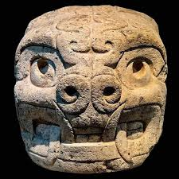
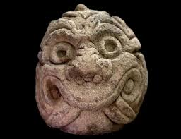
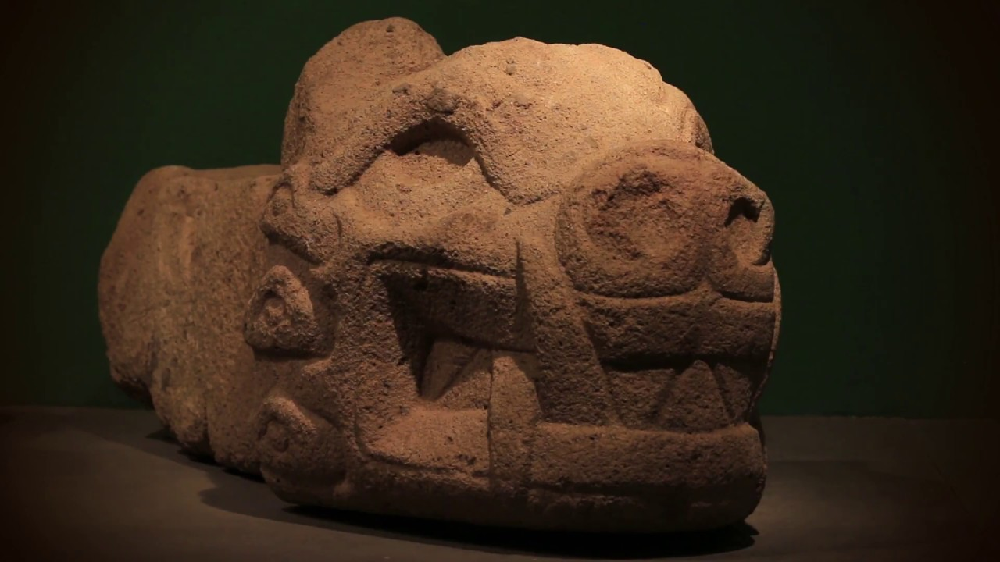

CABEZA CLAVA DE CHAVÍN
Contexto histórico
La Cabeza Clava es una escultura monolítica de piedra perteneciente a la cultura Chavín,
desarrollada en el centro ceremonial de
Chavín de Huántar,
ubicado en la región Áncash, Perú. Estas esculturas fueron empotradas en los muros
del templo como elementos sagrados.

Características principales
Las Cabezas Clavas presentan rasgos humanos combinados con elementos de animales sagrados
como el jaguar, la serpiente y las aves. Sus ojos prominentes y expresiones intensas
reflejan el poder simbólico de la cultura Chavín.

Significado religioso
Estas esculturas representan la transformación espiritual del ser humano durante rituales
ceremoniales. Simbolizan la conexión entre el mundo terrenal y el mundo sobrenatural,
reforzando la autoridad religiosa.

Importancia cultural
La Cabeza Clava es una de las manifestaciones artísticas más importantes del Perú
prehispánico. Refleja el alto nivel simbólico, religioso y artístico alcanzado por la
cultura Chavín.
